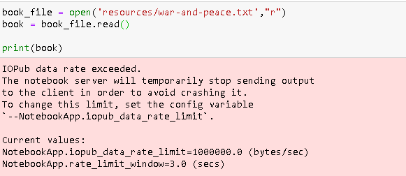
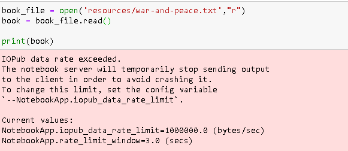

היי, אשמח לעזרה בשאלה האחרונה של חוברת 2.
כרגע, כל מה שעשיתי זה לקרוא את הקובץ ולהעביר את התוכן שלו למשתנה.
אם אני מנסה להדפיס את תוכן המשתנה (כדי להבין מה יש בתוכו ולהתקדם משם), אני מקבלת את השגיאה הבאה:

אשמח לעזרה 

היי, אשמח לעזרה בשאלה האחרונה של חוברת 2.
כרגע, כל מה שעשיתי זה לקרוא את הקובץ ולהעביר את התוכן שלו למשתנה.
אם אני מנסה להדפיס את תוכן המשתנה (כדי להבין מה יש בתוכו ולהתקדם משם), אני מקבלת את השגיאה הבאה:

אשמח לעזרה
בקצרה; כבד מדי על ג’ופיטר להדפיס את כל הקובץ הזה.
אם את באמת רוצה להדפיס אותו למסך, תצטרכי להדפיס רק חלק קטן ממנו
שלום
אני תוהה בקול רם
האם לשאלה זו באמת הכי חכם להשתמש במילון ולא ברשימה?!
כי בסופו של דבר מחפשים מקסימום ומילון זה טיפוס ללא סדר בעוד שרשימה אפשר למיין מן הקטן לגדול ולהחזיר את הגדול…
וגם נניח שכבר יש לי מילון רק עם שנים וערך הוא מספר השנים
האם מפה נכון להמשיך את האלגוריתם על המילון
או לעבור לרשימה ולהמשיך למצוא את המקסימום משם?!
ניתן לך לתהות בקול רם לבד עד שהתרגילים בנושא יוגשו, כדי לא לספיילר למי שכן מנסה ללמוד לבד